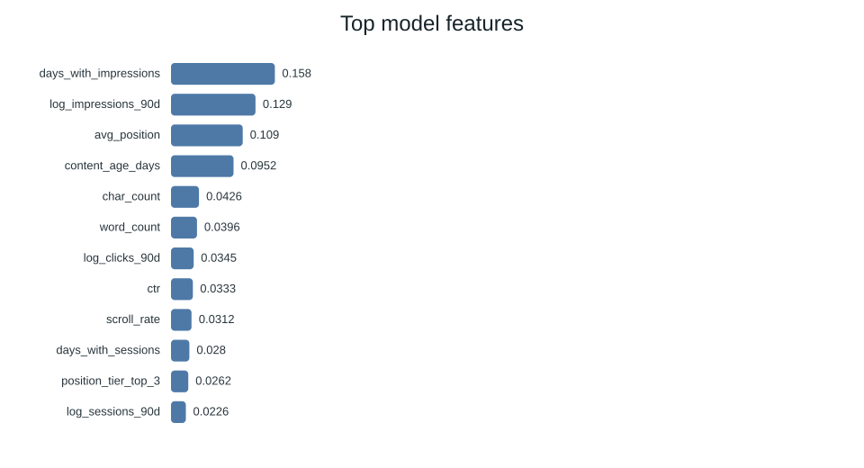
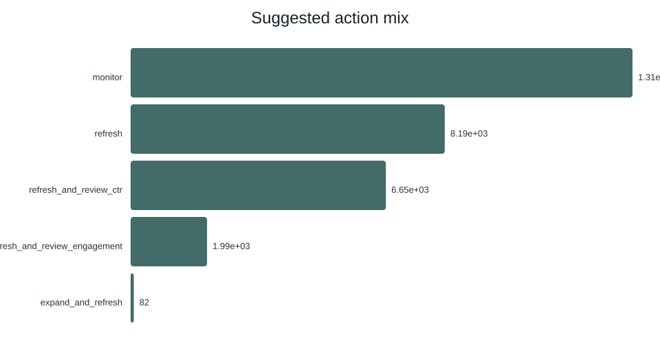

A queue for editorial attention
Content teams have more pages to inspect than time. This project asks whether a ranked, reason-coded queue can help an editor decide which pages to review first. The unit is one pseudonymized content item. The output is a priority score with a suggested action and evidence reason codes; an editor checks page context before making changes. A false positive consumes review time, while a false negative can delay an opportunity. The model is a triage aid and does not automate publishing.
Bundled public-safe starter slice
The source is data/raw/content_refresh_anonymized.csv, the starter slice included in this repository: 30,000 rows across 32 pseudonymized client groups. The dataset includes recent and prior 30-day comparison metrics within a trailing 90-day summary. The bundled file does not specify calendar start/end dates, so this page does not invent them. This analysis did not query the gated warehouse or claim warehouse-wide representativeness.
Client and content IDs are used only for grouping and aligning baseline scores; they never enter the model. Title, URL, domain, raw query, and client-name fields are not present in the starter slice. Target-derived trend fields and provider/model metadata are excluded from predictors. No row-level queue or identifier is published.
Observed decline proxy, client holdout
Label. The target is 1 when trend_direction equals down; that category is derived by comparing impressions in the latest 30 days with the preceding 30 days. It is a same-snapshot decline proxy, not a future label.
Baseline. A hand-built score combines visibility (40%), freshness risk (30%), position opportunity (25%), and content-depth gap (5%). The candidate models are logistic regression, a depth-limited decision tree, and random forest. The forest is selected by Precision@50.
Predictors. Numeric activity, content, freshness, rate and position measures, plus selected categorical metadata (one-hot encoded). Excluded fields include trend_direction, trend_pct, both pseudonymous IDs, and provider/model labels.
Seed 42; 80/20 split by client group. 27,675 rows from 26 groups were used for training and 2,325 rows from 6 unseen groups for testing. Baseline and models were scored on these same test rows. No client groups cross the split.
Leakage checks kept label-derived trends and IDs out of the predictors and verified that train and test groups were disjoint. Because snapshot predictors overlap the label's measurement window, this analysis tests contemporaneous classification and ranking, not a temporally clean forecast.
Model comparison on held-out clients
| Method | ROC AUC | Average precision | Precision@50 |
|---|---|---|---|
| Random forest | 0.750 | 0.618 | 0.740 |
| Decision tree | 0.742 | 0.575 | 0.620 |
| Logistic regression | 0.700 | 0.522 | 0.400 |
| Transparent rule baseline | 0.627 | 0.468 | 0.240 |
Precision@50 is the fraction of positive proxy labels among the top 50 items by score. The random forest's 0.74 exceeds the 0.39 test-set base rate and the baseline's 0.24 in this split. This is ranking lift on a rule-derived contemporaneous label. The model's most influential features include days with impressions, log 90-day impressions, average position, and content age; these importances describe model associations and are not causal effects.


What these results can and cannot say
The evaluation uses a teaching slice rather than the full warehouse release, and its results may not transfer to other populations or later dates. The target is a thresholded trend category computed from the same snapshot period as several predictors. Although the client holdout tests transfer to unseen groups within this slice, it is not a time-aware validation. Performance is sensitive to the label definition and the model/library stack. Feature importance is associational; no experiment measured what happens after a page refresh. The study cannot prove anything about Google's ranking system or causal refresh impact. Interpret scores as directional decision support and verify each page manually.
Turn the score into a review playbook
- Review high-priority pages first. Confirm search demand, data quality, and business context before assigning work. 8,188 refresh and 6,654 CTR review actions appear in the generated queue.
- Match the check to its reason code. For visible low-CTR candidates, review title and snippet relevance; for thin visible pages, assess completeness; for stale pages, check factual freshness. These are review prompts, not prescriptions.
- Keep lower-priority pages in monitoring. The queue marks 13,083 items for monitoring; reconsider after new, non-overlapping measurement windows become available.
- Measure before claiming impact. Log editorial decisions and evaluate later outcomes with a pre-specified time-based design or experiment. Do not auto-publish from this score.
Generated action totals: 8,188 refresh ? 6,654 CTR review ? 1,993 engagement review ? 82 expand and refresh ? 13,083 monitor. Totals describe the full scored starter slice, not the held-out evaluation sample.
Run it again
Seed: 42. Install the packages in requirements.txt, then run the four pipeline stages from a fresh clone. The capstone notebook runs them in order and displays the client split checks, comparison table, aggregate action counts, and charts.
python scripts/02_baseline_score.py
python scripts/03_train_model.py
python scripts/04_evaluate_and_export.py
Repository: source code and weekly work ? capstone notebook ? all assignment notebooks. Processed row-level data are regenerated locally and excluded from publication.
Thank you
Built on the FlyRank ML Internship dataset.